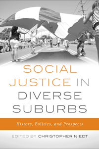

How the suburbs can give rise to campaigns for progressive change
How the suburbs can give rise to campaigns for progressive change


 How the suburbs can give rise to campaigns for progressive change
How the suburbs can give rise to campaigns for progressive change

|  |
Social Justice in Diverse SuburbsHistory, Politics, and Prospectsedited by Christopher Niedtpaper EAN: 978-1-43991-050-4 (ISBN: 1-4399-1050-2) |
"Social Justice in Diverse Suburbs addresses the history and evolution of suburbs, suburban racial and ethnic discrimination and efforts to combat it, metropolitan sprawl, differentiation among suburbs, and the emerging problems of the inner suburbs. Niedt’s excellent introduction covers several engaging and interesting stories of organizing and conflict, and the essays illustrate the changing diversity of suburbs—from Latino issues, which deserve more attention, to resistance to housing mobility for the poor amidst the foreclosure crisis. This book makes a valuable contribution to the literature on suburbs."
—W. Dennis Keating, Professor of Urban Studies at Cleveland State University
American suburbs have been seen as both exclusive idylls for elites as well as crucibles for new ideologies of gender, class, race, and property. But few have considered what the growing diversity of suburban America has meant for progressive social, economic, and political justice movements. Social Justice in Diverse Suburbs is a pioneering and multidisciplinary volume that reassesses commonplace understandings of suburban activism.
Editor Christopher Niedt and his contributors shed light on organizing and conflict in the suburbs with historical and contemporary case studies. Chapters address topical issues ranging from how suburbanites actively fought school segregation to industrial pollution and displacement along the suburban-rural fringe. Social Justice in Diverse Suburbs also considers struggles for integration and environmental justice as well as efforts to preserve suburban history and organize immigrant communities.
Contributors include: Douglas R. Appler, Aaron Cavin, Nancy A. Denton, Lisa Feldstein, Casey Gallagher, Anne Galletta, Joseph Gibbons, Robert Gioielli, Lucas Owen Kirkpatrick, JoAnna Mitchell-Brown, Manuel Pastor, john a. powell, Jason Reece, Alex Schafran, June Williamson, and the editor.
Excerpt available at www.temple.edu/tempress
"Social Justice in Diverse Suburbs is a welcome addition to the scholarship on suburbia, both historical and contemporary. It builds upon a growing literature that moves beyond conventional portrayals of suburbia as places of middle-class white homeowners and conservative politics, to show the suburbs as places of diverse environments, peoples, and politics. This volume provides a rich variety of case studies to document multiple political trajectories in suburbia, including progressive and left-of-center efforts, and in so doing forces a re-thinking of the nature of suburban political culture. Collectively, the articles build a powerful argument that a homogenous conceptualization of suburbia and suburban political culture ought to be put to rest, once and for all."
—Becky Nicolaides, Research Scholar at the UCLA Center for the Studies of Women and author of My Blue Heaven: Life and Politics in the Working-Class Suburbs of Los Angeles, 1920-1965
"[A] comprehensive multidisciplinary view of modern suburbs in America. Christopher Niedt has assembled essays from historians, social psychologists, sociologists, and demographers, in order to investigate how political and social action arises and is organized in suburban locations. From issues of suburban space use to immigrant incorporation, the authors use both historic and contemporary examples to outline how residents unite to address distinct issues faced by suburbanites.... This collection of essays will be of particular interest to researchers in the fields of urban studies and spatial demography, as many focus on the particular use of space within suburban environments, as well as the distinctions which set suburbs apart from cities as a unique spatial environment."
—Contemporary Sociology
"[T]his edited volume offer[s] both historians and planners new ways to think about suburbs. For planners, the book serves as an activist handbook, combining historical examples, contemporary data, and policy proposals into a concise and accessible volume. For historians, the book pushes the historiography beyond any monolithic view of suburbs, presenting the urban fringe in all its complexity.... Taken together, the book is an engaging collection of papers that complement one another, an impressive feat."
—Journal of Planning Education and Research
1. Introduction • Christopher Niedt
Part I: Race, Class, and Exclusion in the Twenty-First Century
2. Twenty-First-Century Suburban Demography: Increasing Diversity Yet Lingering Exclusion • Nancy A. Denton and Joseph R. Gibbons
3. The Suburban Geography of Moral Panic: Low-Income Housing and the Revanchist Fringe • L. Owen Kirkpatrick and Casey Gallagher
4. Protest on the Astroturf at Downtown Silver Spring: July 4, 2007 • June Williamson
Part II: Revealing Activist Histories
5. “In the Spirit of Equality”: Conflict, Dissonance, and the Potential for Transformative Educational Change • Anne Galletta
6. Not Quite Suburban: Progressive Activism in Postwar Chicago • Robert Gioielli
7. Fringe Politics: Suburban Expansion and the Mexican American Struggle for Alviso, California • Aaron Cavin
Part III: Sustaining Social Justice in the Diverse Suburb
8. Maywood, Not Mayberry: Latinos and Suburbia in Los Angeles County • Manuel Pastor
9. Black, Brown, White, and Green: Race, Land Use, and Environmental Politics in a Changing Richmond • Alex Schafran and Lisa M. Feldstein
10. Public Archaeology and Sense of Place in Alexandria, Virginia: An Exploration of the Changing Significance of Fort Ward Park • Douglas R. Appler
11. First Suburbs and Nonprofit Housing: How Do Urban CDCs Develop Affordable Housing in Suburban Communities? • JoAnna Mitchell-Brown
12. The Future of Fair Housing in a Diverse Suburbia • John A. Powell and Jason Reece
References
Contributors
Index
Christopher Niedt is Academic Director for the National Center for Suburban Studies and Assistant Professor in the Department of Sociology at Hofstra University. He is co-editor (with Marc Silver) of Forging a New Housing Policy: Opportunity in the Wake of Crisis.
Urban Studies
Community Organizing and Social Movements
Sociology
© 2015 Temple University. All Rights Reserved. This page: http://www.temple.edu/tempress/titles/2283_reg.html.